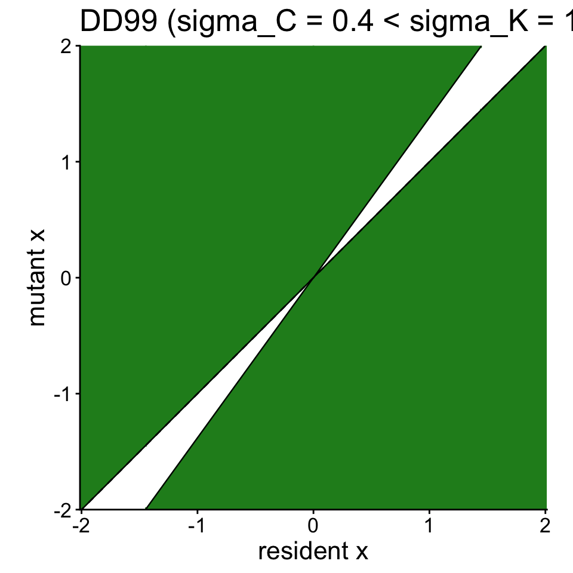
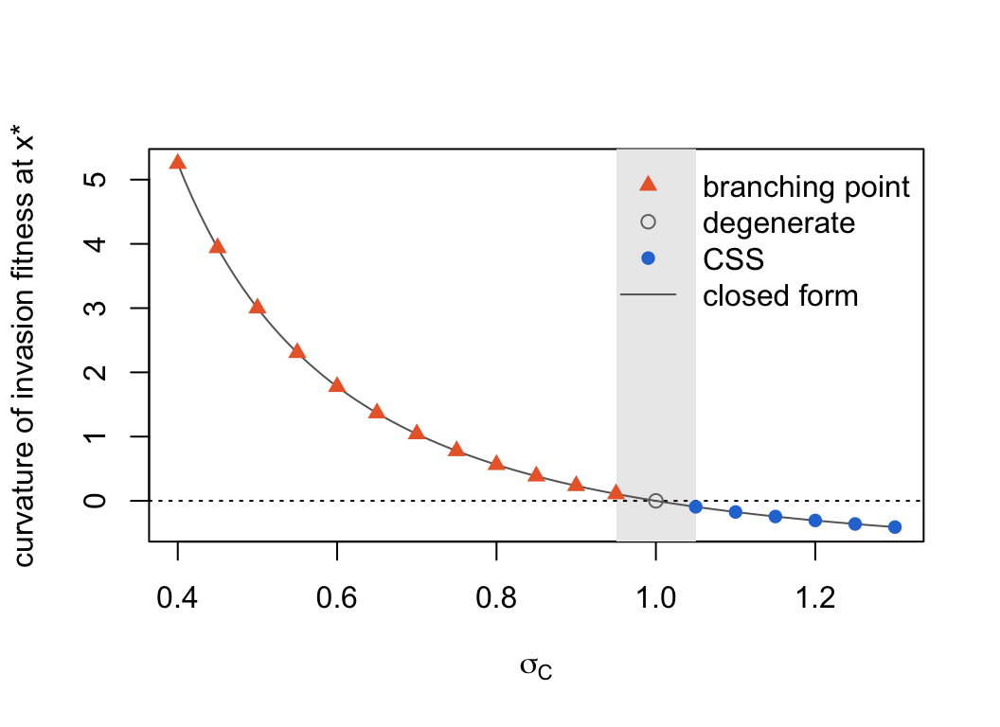
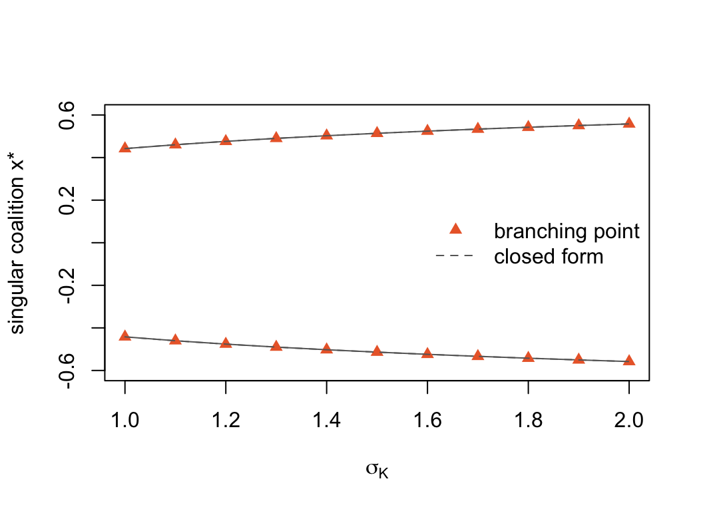
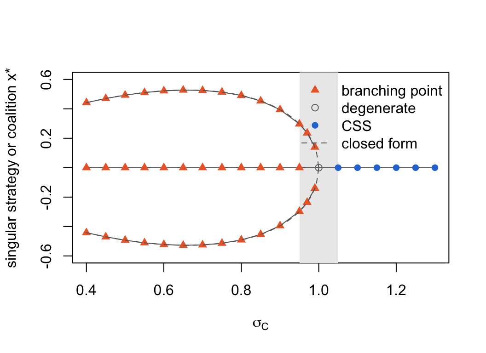

library(regnans)DD99: competition and evolutionary branching
How local competition can split one strategy into two
What the model represents
A single quantitative trait x, such as beak size, determines which part of a continuous resource an individual uses. The environment supports the largest population at an intermediate trait value x0, while individuals with similar trait values compete most strongly with one another.
These two effects can pull evolution in different directions. The resource distribution first draws the population towards x0. Once the population is there, however, strong competition among similar individuals can favour mutants on either side. The central strategy then becomes a fitness minimum and one lineage can split into two diverging strategies. This is evolutionary branching.
The model is based on Dieckmann and Doebeli (1999), On the origin of species by sympatric speciation.
Fitness equations
The model uses two Gaussian curves:
\[ K(x) = K_0 \exp\!\left(-\frac{(x-x_0)^2}{2\sigma_K^2}\right), \qquad C(d) = \exp\!\left(-\frac{d^2}{2\sigma_C^2}\right). \]
For a rare mutant y in a resident community \(\{x_i, N_i\}\) at demographic equilibrium, the invasion fitness (a per-capita growth rate, zero at the resident) is
\[ s(y) = r\left(1 - \frac{\sum_i N_i\, C(y - x_i)}{K(y)}\right). \]
A single resident reaches the equilibrium population size \(N^\* = K(x)\). The singular strategy is \(x^\* = x_0\). Its outcome depends on the widths of the two curves:
- if \(\sigma_C < \sigma_K\), competition acts over a narrower trait range than the resource distribution, and \(x_0\) is an evolutionary branching point;
- otherwise, \(x_0\) is an evolutionarily stable strategy (ESS).
Example analysis with regnans
Choose parameters that produce branching (\(\sigma_C = 0.4 < \sigma_K = 1\)), then solve for the singular strategy:
h <- harness_dd99(r = 1, K0 = 500, x0 = 0, sigma_K = 1, sigma_C = 0.4)
out <- community_start(bounds(x = c(-2, 2)), harness = h, trait_scale = "linear") |>
community_solve_singularity()
as.numeric(out$traits) # x* — expected 0 (= x0)[1] 0Finding the singular strategy does not tell us whether it is stable. We also check the curvature of invasion fitness at the resident. Positive curvature means the resident lies at a fitness minimum, so selection is disruptive and branching can occur:
resident_at <- function(h, x) {
community_start(bounds(x = c(-2, 2)), harness = h, trait_scale = "linear") |>
community_add(trait_matrix(x, "x")) |>
community_demography()
}
curv <- function(comm, at, d = 1e-4) {
f <- comm$fitness_function
(f(at + d) - 2 * f(at) + f(at - d)) / d^2
}
curv(resident_at(h, 0), 0) # > 0 → branching[1] 5.25curv(resident_at(harness_dd99(sigma_C = 1.5), 0), 0) # < 0 → ESS[1] -0.5555556Pairwise invasibility plot
A pairwise invasibility plot shows the sign of \(s(y)\) for each resident x and mutant y. Green marks combinations for which the mutant can invade. The two green wedges on either side of x0 = 0 show that nearby mutants can invade the singular resident, which is the signature of branching.
community_pip() solves each resident of a grid to equilibrium and evaluates every mutant against it, then locates the zero contours exactly and draws the regions they bound; the lines are the contours \(s(y; x) = 0\), one of which is always the diagonal.
pip <- community_start(bounds(x = c(-2, 2)), trait_scale = "linear", harness = h) |>
community_pip()
plot(pip) + ggplot2::ggtitle("DD99 (sigma_C = 0.4 < sigma_K = 1)")
How the singular strategy moves with a parameter
So far the parameters have been fixed. Often the question is how the outcome depends on them: where the singular strategy sits as competition becomes less local, and at what parameter value a branching point becomes a stable strategy. Re-solving the model on a grid of parameter values answers this, but regnans can also follow a singular strategy directly as a parameter changes.
A singular strategy \(x^\*\) is a root of the selection gradient, \(g(x^\*, p) = 0\). When a parameter \(p\) changes, the root moves, and differentiating \(g(x^\*(p), p) = 0\) gives the rate at which it moves:
\[ \frac{dx^\*}{dp} = -\left(\frac{\partial g}{\partial x}\right)^{-1} \frac{\partial g}{\partial p} . \]
community_parameter_sensitivity() computes this sensitivity. For a community of several residents, \(\partial g / \partial x\) is a matrix that couples their gradients: the residents share one environment, so moving one changes the selection on the others, and they respond together.
community_continue_singularity() uses the sensitivity to follow a singular strategy across a series of parameter values. At each new value it predicts where \(x^\*\) will be, solves for the singular strategy from that prediction, and classifies the result again. The output is a one-parameter bifurcation diagram: the singular strategy and its classification along the parameter, with the values at which the classification changes.
Both functions need the model as a function of the parameter, one that takes a value \(p\) and returns a community built at it. community_parameter_map() writes this function for any parameter of the model, and community_parameter_values() reads the value a community was built at:
by_sigma_C <- community_parameter_map(out, "sigma_C")
community_parameter_values(by_sigma_C(0.7), by_sigma_C)sigma_C
0.7 Plotting helpers: plot_path(), add_path() and legend_path()
class_col <- c("CSS" = "#2a78d6", "branching point" = "#eb6834", "degenerate" = "grey45")
class_pch <- c("CSS" = 16, "branching point" = 17, "degenerate" = 1)
# One line per resident, each point marked by its classification, and a grey
# band where the classification changes between two parameter values.
add_path <- function(path) {
ch <- path$changes
if (nrow(ch) > 0)
rect(ch$p_before, par("usr")[3], ch$p_after, par("usr")[4],
col = "grey92", border = NA)
cls <- path$classification
for (j in seq_len(ncol(path$traits))) {
lines(path$p, path$traits[, j], col = "grey40")
points(path$p, path$traits[, j], pch = class_pch[cls], col = class_col[cls])
}
}
plot_path <- function(path, xlab, ylab, ylim = range(path$traits), ...) {
plot(range(path$p), ylim, type = "n", xlab = xlab, ylab = ylab, ...)
add_path(path)
}
# A legend for the classifications on a plot, and optionally one reference line.
legend_path <- function(where, cls, line = NULL, lty = 2) {
n <- length(line)
legend(where, legend = c(cls, line), bty = "n",
pch = c(class_pch[cls], rep(NA, n)), col = c(class_col[cls], rep("grey40", n)),
lty = c(rep(0, length(cls)), rep(lty, n)))
}A branching point becomes a stable strategy
Start from the singular strategy solved above, at \(\sigma_C = 0.4\), and follow it as the competition kernel widens past the resource kernel (\(\sigma_K = 1\)):
path_C <- community_continue_singularity(out, by_sigma_C, seq(0.4, 1.3, by = 0.05))
path_C<singularity_path: 19 points, p from 0.4 to 1.3>
classification: branching point (p 0.4 to 0.95), degenerate (p 1 to 1), CSS (p 1.05 to 1.3)
equilibrium solves: 95path_C$changes p_before p_after from to
1 0.95 1.00 branching point degenerate
2 1.00 1.05 degenerate CSSThe singular strategy stays at \(x_0\) all along the path, since \(x^\* = x_0\) whatever the kernels. What changes is its classification. It is a branching point while competition is more local than the resource (\(\sigma_C < \sigma_K\)) and a CSS once it is less local. Exactly at \(\sigma_C = \sigma_K\) the curvature of invasion fitness is zero and the second-order test cannot decide, so that point is classified as degenerate.
The classification rests on the curvature of invasion fitness in the mutant direction at the resident, which for DD99 has the closed form
\[ \frac{\partial^2 s}{\partial y^2}\bigg|_{y = x = x_0} = r\left(\frac{1}{\sigma_C^2} - \frac{1}{\sigma_K^2}\right). \]
Each point of the path records its full classification, including this curvature. The curvature computed numerically along the path lies on the closed form and changes sign where the classification does:
curvature <- vapply(path_C$classifications, function(cl) as.numeric(cl$hessian), 0)
plot(path_C$p, curvature, type = "n", xlab = expression(sigma[C]),
ylab = "curvature of invasion fitness at x*")
ch <- path_C$changes
rect(ch$p_before, par("usr")[3], ch$p_after, par("usr")[4], col = "grey92", border = NA)
abline(h = 0, lty = 3)
curve(1 / x^2 - 1, add = TRUE, col = "grey40")
points(path_C$p, curvature, pch = class_pch[path_C$classification],
col = class_col[path_C$classification])
legend_path("topright", unique(path_C$classification), "closed form", lty = 1)
A pair of strategies
When \(\sigma_C < \sigma_K\) the population branches, and the two lineages settle at a pair of strategies placed symmetrically about \(x_0\). The pair is at \(x_0 \pm a^\*\), where
\[ a^\* = \sigma_C \sqrt{\tfrac{1}{2}\ln\frac{1 - c}{c}}, \qquad c = \frac{\sigma_C^2}{2\sigma_K^2} . \]
Solving for the pair from two starting residents, and taking its sensitivity to three parameters at once:
pair <- community_solve_singularity(out, x0 = trait_matrix(c(-0.3, 0.3), "x"))
pair$traits x
[1,] -0.4420269
[2,] 0.4420269S <- community_parameter_sensitivity(pair, community_parameter_map(pair, c("x0", "sigma_C", "sigma_K")))
round(S[, ], 4) x0 sigma_C sigma_K
x[1] 1 -0.6133 -0.1967
x[2] 1 0.6133 0.1967Each row is a resident and each column a parameter. Both residents move one for one with \(x_0\): the whole pair shifts with the resource optimum. Their responses to the two kernel widths are equal and opposite, so widening either kernel spreads the pair apart without moving its centre. These are the derivatives of \(\pm a^\*\):
a_star <- function(sigma_C, sigma_K = 1) {
c0 <- sigma_C^2 / (2 * sigma_K^2)
sigma_C * sqrt(log((1 - c0) / c0) / 2)
}
d <- 1e-6
c(sigma_C = (a_star(0.4 + d) - a_star(0.4 - d)) / (2 * d),
sigma_K = (a_star(0.4, 1 + d) - a_star(0.4, 1 - d)) / (2 * d)) sigma_C sigma_K
0.6132616 0.1967222 Following the pair as the resource kernel widens, both residents move outwards, on the closed form. The pair is itself a branching point at every value: with Gaussian kernels each of its residents can branch again, as the assembly examples show.
path_K <- community_continue_singularity(pair, community_parameter_map(pair, "sigma_K"),
seq(1, 2, by = 0.1))
path_K<singularity_path: 11 points, p from 1 to 2 (coalition of 2)>
classification: branching point (p 1 to 2)
equilibrium solves: 120plot_path(path_K, xlab = expression(sigma[K]), ylab = "singular coalition x*",
ylim = c(-0.6, 0.6))
curve(a_star(0.4, x), add = TRUE, lty = 2, col = "grey40")
curve(-a_star(0.4, x), add = TRUE, lty = 2, col = "grey40")
legend_path("right", unique(path_K$classification), "closed form")
Where the pair disappears
As \(\sigma_C\) grows, the pair first spreads a little, then closes up on \(x_0\): \(a^\*\) falls to zero as \(\sigma_C\) approaches \(\sigma_K\). At \(\sigma_C = \sigma_K\) the two residents merge into the single singular strategy, which is where it turns from a branching point into a CSS. Beyond that there is no pair to follow. This is a pitchfork bifurcation.
The continuation sees this coming: the sensitivity grows without bound as the pair closes, and a path asked to go past the bifurcation stops at the first value it cannot reach. It warns at that point and keeps everything before it:
path_pair_C <- community_continue_singularity(pair, by_sigma_C,
c(seq(0.4, 0.95, by = 0.05), 0.97, 0.99, 1.05))Warning in community_continue_singularity(pair, by_sigma_C, c(seq(0.4, 0.95, : community_continue_singularity stopped at p = 1.05: community_solve_singularity lost the coalition: residents 1 and 2
have mergedpath_pair_C$stopped$p
[1] 1.05
$reason
[1] "community_solve_singularity lost the coalition: residents 1 and 2 have merged"tail(cbind(sigma_C = path_pair_C$p, path_pair_C$sensitivity), 4) sigma_C x[1] x[2]
[11,] 0.90 1.477552 -1.477552
[12,] 0.95 2.600663 -2.600663
[13,] 0.97 3.638263 -3.638263
[14,] 0.99 6.807985 -6.807985The warning says that at \(\sigma_C = 1.05\) the solver, started from the predicted pair, found the two residents merged into one: the pair no longer exists. The last rows of the sensitivity show the residents moving faster and faster as the bifurcation approaches.
Drawn together with the single resident from above, the two paths make the pitchfork. The branching point at \(x_0\) splits into the pair, which closes up again as \(\sigma_C\) grows and meets \(x_0\) where the single strategy becomes a CSS:
plot_path(path_C, xlab = expression(sigma[C]), ylab = "singular strategy or coalition x*",
ylim = c(-0.6, 0.6))
add_path(path_pair_C)
curve(a_star(x), from = 0.4, to = 1, add = TRUE, lty = 2, col = "grey40")
curve(-a_star(x), from = 0.4, to = 1, add = TRUE, lty = 2, col = "grey40")
legend_path("topright", c("branching point", "degenerate", "CSS"), "closed form")